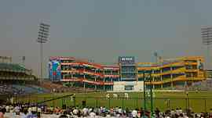
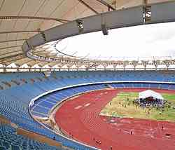
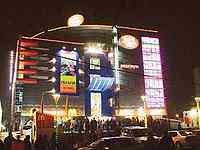
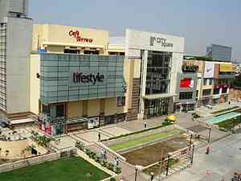

|
|
Sports venues, Markets and malls

Feroz Shah Kotla Cricket Stadium
The Feroz Shah Kotla is a cricket ground located at Bahadur Shah Zafar Marg, Delhi. It was established in 1883 and is the second oldest international cricket stadium still functional in India, after the Eden Gardens in Kolkata. It is located close to the 20,000 capacity Ambedkar Stadium, the home of association football club New Delhi Heroes FC. In the 21st century, the Feroz Shah Kotla is famed for its cauldron-like atmosphere. The vociferous home support has led to a great winning sequence for India in Test matches, and the India national cricket team has been undefeated for over 20 years at this ground. The ground is most famously known for Anil Kumble's 10 wickets in an innings against Pakistan.

Jawaharlal Nehru Stadium
Jawaharlal Nehru Stadium in Delhi, India, is a multipurpose sports arena hosting football and other sporting events, as well as large-scale entertainment events. It is named after the first Prime Minister of India. The all-seater facility seats 60,254 spectators, and up to 100,000 for concerts. In terms of seating capacity, it is the fourth largest multipurpose stadium in India and the 51st largest in the world. The stadium complex also houses the headquarters of the Sports Authority of India (SAI), the field arm of the Ministry of Youth Affairs and Sports, Government of India, and Indian Olympic Association (IOA). The Jawaharlal Nehru Stadium was constructed by the Government of India to host the 9th Asian Games in 1982, following which it hosted the 1989 Asian Championships in Athletics and the 2010 Commonwealth Games. In preparation for the 2010 Commonwealth Games, the stadium reduced its capacity from 78,000 to 60,254 spectators.

Chandni Chowk
Chandni Chowk, a main marketplace in Delhi, keeps alive the city's living legacy of Shahjahanabad. Created by Shah Jahan the builder of Taj Mahal, the old city, with the Red Fort as its focal point and Jama Masjid as the praying centre, has a fascinating market called Chandni Chowk. Legend has it that Shah Jahan planned Chandni Chowk so that his daughter could shop for all that she wanted. The market was divided by canals. The canals are now closed, but Chandni Chowk remains Asia's largest wholesale market. Crafts once patronized by the Mughals continue to flourish there. Chowk is one of the oldest and busiest markets in central north Delhi, the Laal Quila (The Red Fort) and Fateh Puri Masjid. With the most famous mosque of Delhi Jama Masjid in the vicinity, along with Sis Ganj Gurudwara, Gauri Shankar Mandir, Jain Mandir and a lot of small temples, the place witnesses a genuine cultural harmony.

Ansal Plaza
Ansal Plaza is also shopping mall located at Andrews Ganj on Khel Gaon Marg, in South Delhi. Opened on 1 November 1999, it is the first major shopping mall of Delhi. The mall was established by Ansal Properties & Infrastructure Ltd. The mall has an amphitheatre enclaved within the circular shaped plaza. It has parking facilities for 1000 cars.

Shivaji Place
Shivaji Place District Centre is a commercial centre located in Rajouri Garden, West Delhi, India. The district centre is currently under development and only five shopping malls are currently operational. The Shivaji Place District Centre is located in the heart of Rajouri Garden in west Delhi. It is connected by the Ring Road and Najafgarh Road and it is opposite the Rajouri Garden Market. The catchment of the district centre comprises the prime residential localities of Punjabi Bagh, Rajouri Garden, Shivaji Enclave, Tilak Nagar, Mansarovar Garden, Kirti Nagar, Paschim Vihar and Patel Nagar. The district centre is also on the Blue Line of the Delhi Metro.
go to top
Home
Developed by SUGATO CHAKRABORTY (currently pursuing B.Tech in CSE from West Bengal University of Technology, developer at Boscom Software,2014)
|
|